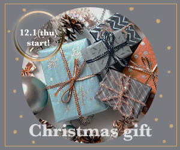

クリスマスギフト バナー
・クリスマスギフトのバナー制作
・温かみを感じる北欧系の商品を多く取り扱うインテリア・雑貨のブランド
・期間内限定でクリスマス用の飾りや食器、ラッピング用品から
贈り物用にマグカップ、ファブリック用品、ファッション小物を販売
・クリスマスの雰囲気と北欧デザインのようなイメージで
- 意識した点
-
プレゼントの画像をメインにし、クリスマスのワクワク感を意識しました。
また周りをグレー背景にし、雪のような点を描くことで北欧っぽさを出しました。
日付を囲う丸はメタリックな質感を意識して制作し、
プレゼントに貼るギフトシールのようなイメージで特別感を出しました。 - 使用スキル
- Photoshop
